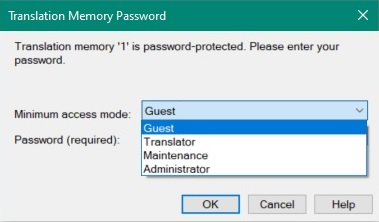

Setting Translation Memory Access Rights
By default, anyone who has Trados Studio can open and use a file-based TM. If you do not assign passwords, users have unrestricted access to the translation memory, including read/write and import/export operations. You can also protect a TM with passwords that restrict access to specific functionality.
Access Levels
File-based TMs support four access levels:
- Administrator: Can perform any TM-related operation, including read/write, settings changes, and import/export.
- Maintenance: Can perform tasks such as global find and replace, but cannot change TM settings or use import/export.
- Read/Write: Typically used by translators who need to add or change TUs and search the TM.
- Read-only: Guest access that allows users to perform only TM lookups.
When a user opens a password-protected TM in Trados Studio, the following prompt lets the user select an access level and enter the corresponding password:

Setting Passwords Programmatically
Add a new class named TmProtector to your project. Then add a public method named AssignPasswords() that takes the TM file path as a parameter. Call it as shown below:
var tmProtector = new TmProtector();
tmProtector.AssignPasswords(_translationMemoryFilePath);
The API provides four methods for setting passwords, one for each access level. Pass each password as a string. When you set passwords, follow the required order. For example, set the read-only password only after you set the read/write password. The method can look like this:
public void AssignPasswords(string tmPath)
{
var tm = new FileBasedTranslationMemory(tmPath);
tm.SetAdministratorPassword("super");
tm.SetMaintenancePassword("maintain");
tm.SetReadWritePassword("translator");
tm.SetReadOnlyPassword("guest");
tm.Save();
this.OpenProtectedTm(tmPath, "super");
}
The password-setting method calls a separate helper method to open the protected TM.
Open a Password-Protected TM
Add the following method to open the TM with the administrator password. Pass the password as a string parameter and catch exceptions for cases such as an invalid password.
private void OpenProtectedTm(string tmPath, string password)
{
try
{
var tm = new FileBasedTranslationMemory(tmPath, password);
}
catch (Exception ex)
{
MessageBox.Show(ex.Message);
}
}
Putting it All Together
The complete class should now look like this:
namespace SDK.LanguagePlatform.Samples.TmAutomation
{
using System;
using System.Windows.Forms;
using Sdl.LanguagePlatform.TranslationMemoryApi;
public class TmProtector
{
#region "assign"
public void AssignPasswords(string tmPath)
{
var tm = new FileBasedTranslationMemory(tmPath);
tm.SetAdministratorPassword("super");
tm.SetMaintenancePassword("maintain");
tm.SetReadWritePassword("translator");
tm.SetReadOnlyPassword("guest");
tm.Save();
this.OpenProtectedTm(tmPath, "super");
}
#endregion
#region "openTMwithPW"
private void OpenProtectedTm(string tmPath, string password)
{
try
{
var tm = new FileBasedTranslationMemory(tmPath, password);
}
catch (Exception ex)
{
MessageBox.Show(ex.Message);
}
}
#endregion
}
}